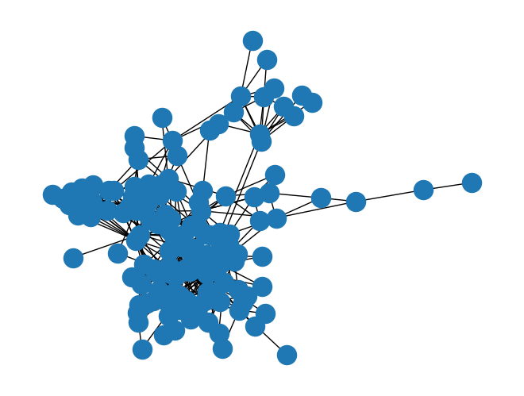
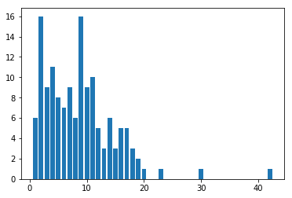
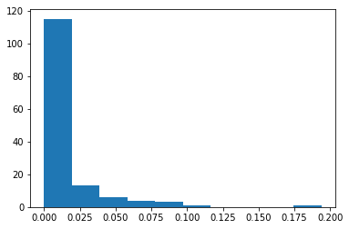
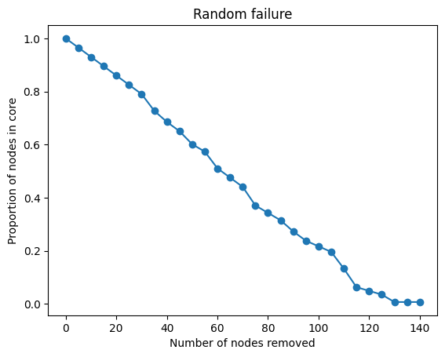
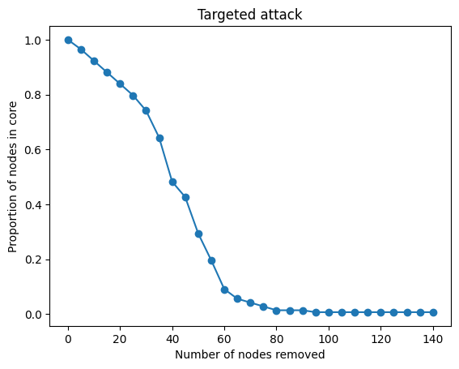
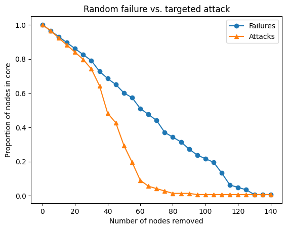

from collections import Counter
import matplotlib.pyplot as plt
import networkx as nx
import numpy as np
import randomNetwork X - Centrality
Network X - Centrality
The contents of this notebook have been derived from “A First Course in Network Science” by Filippo Menczer. You can see their official Github repository here.
Contents:
1. Finding hubs
Often when looking at a network, we want to find the most “important” nodes, for some definition of important. The most basic measure of centrality is the degree, or number of links attached to a node.
Let’s look at the Enron executive email graph:
G = nx.read_edgelist("../../data/ia-enron-only/ia-enron-only.edges", nodetype=int)
print(G)
nx.draw(G)
plt.show()Graph with 143 nodes and 623 edges
Caveat
By default, nx.read_edgelist assumes node names are strings.
Edge lists are a simple, plain text format for storing graphs. Since this simple file format doesn’t contain information about data types, all node names are assumed to be strings by default. When the node names are given by integers, as they are in this example, we should specify the nodetype=int keyword argument to avoid confusion with the node names.
Finding the node with max degree
We can apply the max function to get the maximum node according to some criterion. In our case, we want to compare the nodes by their degree:
highest_degree_node = max(G.nodes, key=G.degree)
highest_degree_node105G.degree(highest_degree_node)42So we know that node 105 has 42 edges connected to it. Let’s look at that calculation a little closer:
max(G.nodes, key=G.degree)We’re telling the max function that we want the item from G.nodes that gives us the highest value when passed to the key function G.degree.
This construction works because G.degree is a function. Some other measures of centrality such as betweenness generate all of the nodes’ centrality values at once and return a dict. In this case, we need an extra step:
betweenness = nx.centrality.betweenness_centrality(G)
highest_betweenness_node = max(G.nodes, key=betweenness.get)
highest_betweenness_node105betweenness[highest_betweenness_node]0.19400604344556296Note that the following will throw an error:
max(G.nodes, key=betweenness)TypeError: 'dict' object is not callableThis is because we need to provide a function to the key argument, but betweenness is a dict. To get around this, we use the dict’s get method.
2. Centrality distributions
We’ve found the most central node in the network, but often we want to summarize information about the centrality of all nodes. For example, in addition to the maxmimum degree, we often want the mean and median degree in a network.
The first step in summarizing this information is to get a sequence of all of the centrality values in the graph. We don’t care about the node names anymore, we just want a sequence of numbers. We can start with the example of degree:
degree_sequence = [G.degree(n) for n in G.nodes]To get the mean and median of this sequence, we can use NumPy:
print("Mean degree:", np.mean(degree_sequence))
print("Median degree:", np.median(degree_sequence))Mean degree: 8.713286713286713
Median degree: 8.0For other measures of centrality, which are calculated for the whole network at once and return a dict, we can use the dict’s .values().
betweenness = nx.centrality.betweenness_centrality(G)
betweenness_sequence = list(betweenness.values())
print("Mean betweenness:", np.mean(betweenness_sequence))
print("Median betweenness:", np.median(betweenness_sequence))Mean betweenness: 0.013950388838012456
Median betweenness: 0.0037492834763570323Plotting the distribution
We can graphically represent the sequence of centrality values by using a histogram. In its basic form, a histogram plots the degree values on the x-axis, and the number of nodes having that degree on the y-axis. To do this counting, we can make use of Python’s collections.Counter.
degree_counts = Counter(degree_sequence)
degree_countsCounter({2: 16,
9: 16,
4: 11,
11: 10,
10: 9,
7: 9,
3: 9,
5: 8,
6: 7,
14: 6,
8: 6,
1: 6,
17: 5,
12: 5,
16: 5,
13: 3,
18: 3,
15: 3,
19: 2,
30: 1,
20: 1,
42: 1,
23: 1})The Counter object returned is like a dict, pairing the item counted with the number of times it showed up in the sequence.
On this basic histogram plot, we want an x-value for every integer between the minimum and maximum degree in the sequence, inclusive. Note that degree_counts.keys() gives us every distinct value seen in the degree sequence. Also note that we need the +1 in the range below because we want to include the right endpoint.
min_degree, max_degree = min(degree_counts.keys()), max(degree_counts.keys())
plot_x = list(range(min_degree, max_degree + 1))Our y-values are then the number of times we counted each x-value in the degree sequence. We can make use of the .get method with a default value in order to count 0 for degree values that don’t show up in the sequence. For example, notice that 32 does not show up in degree_counts above, so degree_counts.get(32, 0) will give us 0.
plot_y = [degree_counts.get(x, 0) for x in plot_x]To do the plotting, we use Matplotlib’s pyplot module.
plt.bar(plot_x, plot_y)
plt.show()
Histogram binning
When there are more x-values than you can comfortably display, or when your centrality measure is not discrete, as in the case of betweenness centrality, we can make use of histogram “binning.” This just defines a sequence of disjoint intervals called bins, and counts the number of values that fall into each such bin. In the simplest of cases, we can just tell Pyplot’s hist function how many bins we want and it will do the binning for us.
counts, bins, patches = plt.hist(betweenness_sequence, bins=10)
plt.show()
We can investigate the returned bins and counts if we want:
binsarray([0. , 0.0194006 , 0.03880121, 0.05820181, 0.07760242,
0.09700302, 0.11640363, 0.13580423, 0.15520483, 0.17460544,
0.19400604])countsarray([115., 13., 6., 4., 3., 1., 0., 0., 0., 1.])From these, we can see that there are 115 values between 0 and 0.0194006, 13 values between 0.194006 and 0.3880121, etc.
3. Testing robustness
Another way to think about the relative “importance” of nodes in a network is to measure how much it would damage the network structure if particular nodes were to be removed. In real life, node removal might be a person moving away and out of a social network, someone changing jobs and being removed from an email network, internet routers being attacked/overloaded and going down, etc.
Broadly, we consider two types of network damage: random failure and targeted attack. In a random failure, nodes are chosen randomly for removal. In a targeted attack, we will remove nodes based on some criterion, for example, removing nodes in decreasing order of their degree centrality.
Connected components
In order to measure “damage,” we will measure the size of the network’s largest connected component, sometimes called core. First we observe that nx.connected_components is a generator that provides the connected components one at a time.
nx.connected_components(G)<generator object connected_components at 0x7f7d85601f68>Since we often only want the core, or largest connected component, we can use the max function to get it. Each component is provided as a set of node names:
core = max(nx.connected_components(G), key=len)
core{1,
2,
3,
4,
5,
6,
7,
8,
9,
10,
11,
12,
13,
14,
15,
16,
17,
18,
19,
20,
21,
22,
23,
24,
25,
26,
27,
28,
29,
30,
31,
32,
33,
34,
35,
36,
37,
38,
39,
40,
41,
42,
43,
44,
45,
46,
47,
48,
49,
50,
51,
52,
53,
54,
55,
56,
57,
58,
59,
60,
61,
62,
63,
64,
65,
66,
67,
68,
69,
70,
71,
72,
73,
74,
75,
76,
77,
78,
79,
80,
81,
82,
83,
84,
85,
86,
87,
88,
89,
90,
91,
92,
93,
94,
95,
96,
97,
98,
99,
100,
101,
102,
103,
104,
105,
106,
107,
108,
109,
110,
111,
112,
113,
114,
115,
116,
117,
118,
119,
120,
121,
122,
123,
124,
125,
126,
127,
128,
129,
130,
131,
132,
133,
134,
135,
136,
137,
138,
139,
140,
141,
142,
143}So the len of this set gives us the number of nodes in this component:
len(core)143If we want all of the connected components, we can get a list of them:
components = list(nx.connected_components(G))the length of this list is the number of connected components:
len(components)1Random failure
Whenever we’re going to engage in a distructive process, we want to make a copy of the network graph to attack so that we can easily get back to the original state:
C = G.copy()To simulate random failure, we randomly choose some node names and remove them from the graph. We can use random.sample to remove more than one node at at time. Note that we need to make a list of node names from which to randomly sample:
nodes_to_remove = random.sample(list(C.nodes), 2)
C.remove_nodes_from(nodes_to_remove)The full simulation is going to work like this, beginning from a fresh copy of the network:
- Measure size of the network core as compared to the original network size
- Select M nodes at random and remove them
- Repeat until there are less than M nodes
We’ll determine M from how many steps we want this process to take. Around 25 steps should be good, so:
number_of_steps = 25
M = G.number_of_nodes() // number_of_steps
M5We can then use range to generate a sequence of the total number of nodes removed at each step:
num_nodes_removed = range(0, G.number_of_nodes(), M)The loop is fairly simple. At each step, we need to record the fraction of remaining nodes in the core.
N = G.number_of_nodes()
C = G.copy()
random_attack_core_proportions = []
for nodes_removed in num_nodes_removed:
# Measure the relative size of the network core
core = max(nx.connected_components(C), key=len)
core_proportion = len(core) / N
random_attack_core_proportions.append(core_proportion)
# If there are more than M nodes, select M nodes at random and remove them
if C.number_of_nodes() > M:
nodes_to_remove = random.sample(list(C.nodes), M)
C.remove_nodes_from(nodes_to_remove)plt.title("Random failure")
plt.xlabel("Number of nodes removed")
plt.ylabel("Proportion of nodes in core")
plt.plot(num_nodes_removed, random_attack_core_proportions, marker="o")
plt.show()
Targeted attack
Simulating a targeted attack is similar, except that instead of choosing randomly, we will select the M most central nodes at each step. To accomplish this we want something like the max function used earler to get the most central node, but able to get the top M nodes. We can use Python’s sorted function in a similar way to max to first sort the nodes by centrality in descending, or reverse, order. Once sorted by degree, we take the first M nodes in the list:
nodes_sorted_by_degree = sorted(G.nodes, key=G.degree, reverse=True)
top_degree_nodes = nodes_sorted_by_degree[:M]
top_degree_nodes[105, 17, 95, 48, 132]With that in mind, the loop looks similar. Let’s put all the pieces together here:
N = G.number_of_nodes()
number_of_steps = 25
M = N // number_of_steps
num_nodes_removed = range(0, N, M)
C = G.copy()
targeted_attack_core_proportions = []
for nodes_removed in num_nodes_removed:
# Measure the relative size of the network core
core = max(nx.connected_components(C), key=len)
core_proportion = len(core) / N
targeted_attack_core_proportions.append(core_proportion)
# If there are more than M nodes, select top M nodes and remove them
if C.number_of_nodes() > M:
nodes_sorted_by_degree = sorted(C.nodes, key=C.degree, reverse=True)
nodes_to_remove = nodes_sorted_by_degree[:M]
C.remove_nodes_from(nodes_to_remove)plt.title("Targeted attack")
plt.xlabel("Number of nodes removed")
plt.ylabel("Proportion of nodes in core")
plt.plot(num_nodes_removed, targeted_attack_core_proportions, marker="o")
plt.show()
As we can see, the effect is dramatic. The network is totally disconnected after removing relatively few central nodes in the graph.
Pyplot can plot these curves on the same plot for additional effect:
plt.title("Random failure vs. targeted attack")
plt.xlabel("Number of nodes removed")
plt.ylabel("Proportion of nodes in core")
plt.plot(
num_nodes_removed, random_attack_core_proportions, marker="o", label="Failures"
)
plt.plot(
num_nodes_removed, targeted_attack_core_proportions, marker="^", label="Attacks"
)
plt.legend()
plt.show()